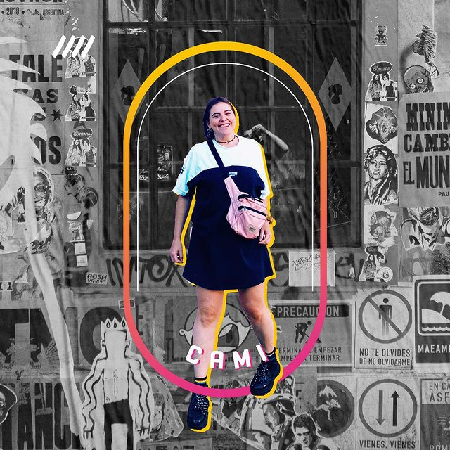
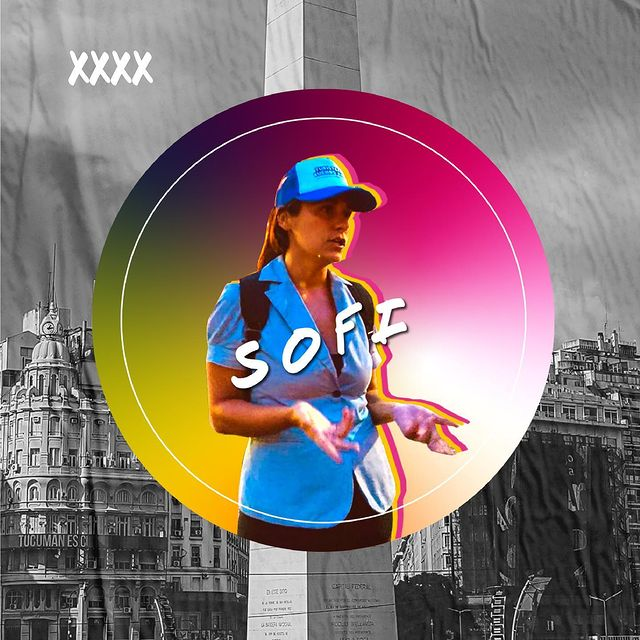
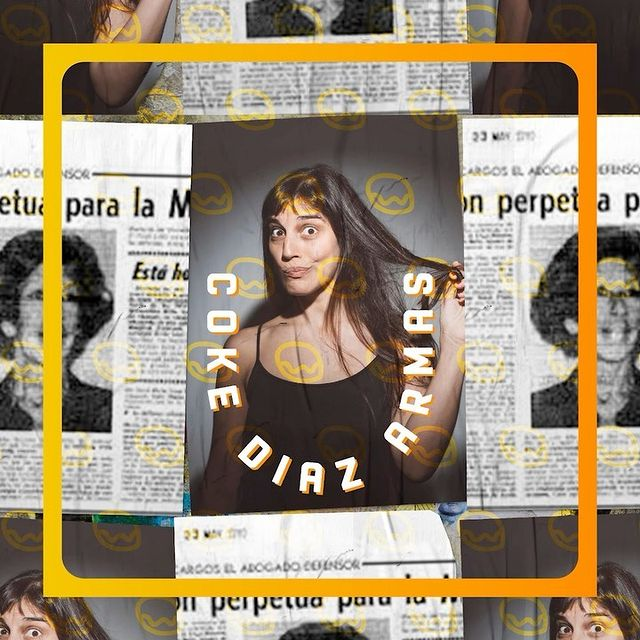
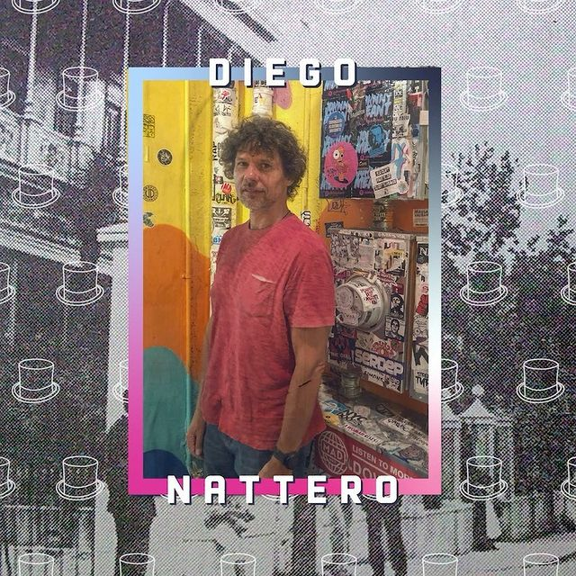
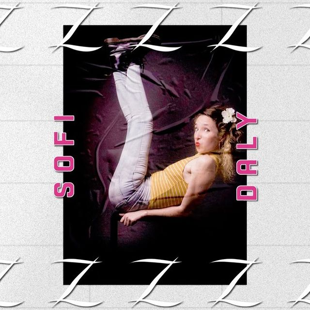
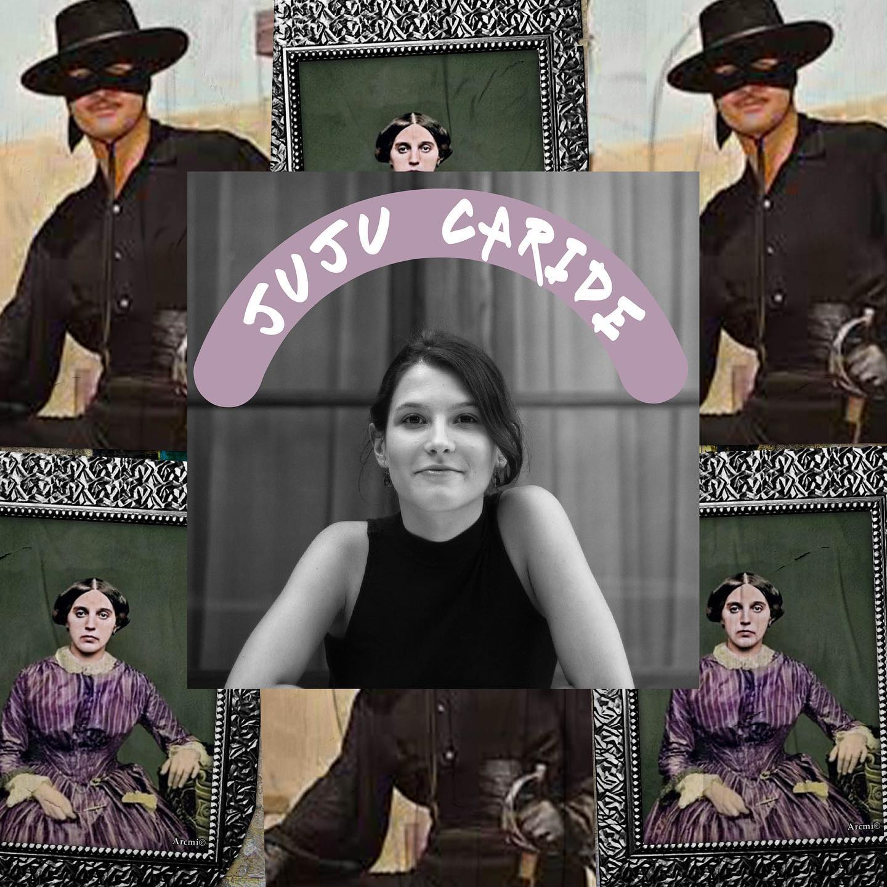

Cami

Emprendedora, creativa, simple y apasionada, una distinta.
Busca siempre la innovación para poder mostrarle a todo aquel que se acerque esta propuesta, una mirada diferente.
Amante de Buenos Aires, la historia, los datos curiosos y del arte en todos sus aspectos.
Sofi

Ama ser guía y transmitir nuestra cultura, y eso lo emana y contagia! Con una simpleza admirable te lleva de viaje sin siquiera salir de la ciudad.
Ella es quien investiga barrio por barrio para que todxs podamos disfrutar de los datos más piolas, interesantes y desconocidos de cada lugar.
Coké Díaz Armas

Actriz muy talentosa, creativa, auténtica, y por sobre todo, divertida!
Siempre está para aportar nuevas ideas y potenciar al equipo con su energía que contagia alegría y buenas ondas.
Con mil facetas y una impronta única genera en el espectador un acercamiento nítido a cada personaje que representa.
Diego Nattero

Se llevó el premio revelación! Nos salvó las papas con un reemplazo y nunca más pudimos salir sin él!
Con una manera poética de relatar historias nos deleita mes a mes en el Turistearte del Terror y Turistearte de Amores Turbios.
Siempre al servicio de los demás y una energía bella que nos inunda!
Sofi Daly

Talentosa actriz y cantante que nos deleita con sus performances y cantos en los recorridos por la ciudad!
Fresca, comprometida, divertida. Ama lo que hace y se nota por la pasión evidente!
De las primeras que nos acompañó y siempre firme para salir, para crear e inventar cosas nuevas.
Paula Zaurdo

Es brillo, sonrisas, buenas energías, es todo lo que está bien!
Gran actriz! Un talento evidente y gracias a su larga carrera artística logra que cada representación sea única y pone su impronta a cada proyecto!
Desborda amor y pasión! Somos felices de haberla encontrado!
Juan Cruz Painceira
Llega siempre tranquilo y con la mejor onda! Eso lo caracteriza, SIEMPRE SUMA!
Con su buena predisposición, ganas de laburar y probar cosas nuevas, para nosotras es un valor en el equipo.
Juju Caride

Fue la ultima en integrarse a nuestro equipo, y qué felices estamos!
Sonrisa inquebrantable y una predisposición firme para todos los proyectos!
Responsable, alegre y compañera! Ah! Y no les dijimos? Canta como un ángel!